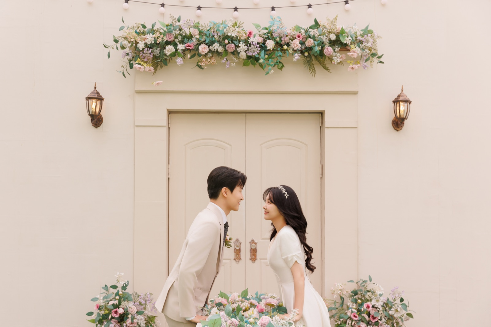
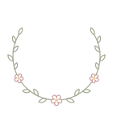

WE’RE GETTING MARRIED
2027 · 01 · 03
SUNDAY · 3 PM

방인혁손유민
2027년 1월 3일 일요일 오후 3시
더컨벤션 송파문정 13층 아모르홀
INVITATION
초대합니다
연인이 되어
서로의 삶에 스며든 두 사람이
새해의 시작과 함께 부부로서의
첫걸음을 내딛고자 합니다.
소중한 분들 앞에서 서로에게
평생의 약속을 전하려 하오니
두 사람의 설레는 시작을
따뜻한 축복과 격려로
함께해 주시면 감사하겠습니다.
THE COUPLE
신랑 신부
-
신랑
방주경 · 주진숙의 아들 인혁
-
신부
손홍희 · 김연주의 딸 유민
THE DAY
예식일
2027년 1월 3일 일요일 오후 3시
| 일 | 월 | 화 | 수 | 목 | 금 | 토 |
|---|---|---|---|---|---|---|
| 1 | 2 | |||||
| 1월 3일 일요일, 예식일 | 4 | 5 | 6 | 7 | 8 | 9 |
| 10 | 11 | 12 | 13 | 14 | 15 | 16 |
| 17 | 18 | 19 | 20 | 21 | 22 | 23 |
| 24 | 25 | 26 | 27 | 28 | 29 | 30 |
| 31 |
GALLERY
사진첩
사진을 누르면 크게 보실 수 있습니다.
LOCATION
오시는 길
- 지하철
- 8호선 문정역 3번 출구 도보 3분
- 주차
- 주차 2시간 무료 이용 가능하며
예식장 주차장 만차 시 외부 연계 주차장으로 안내해 드립니다. - 내비게이션
- 내비게이션에서 "더컨벤션 송파문정" 또는
"서울 송파구 송파대로 155"를 검색해 주세요.
NOTICE
축하 화환 안내
WITH HEART
마음 전하실 곳
신랑측
신한은행 110-335-546640
예금주 방인혁
신부측
국민은행 298702-04-213005
예금주 손유민
GUESTBOOK
방명록
남겨 주신 말씀

Thank you
2027.01.03
Inhyeok & Yumin